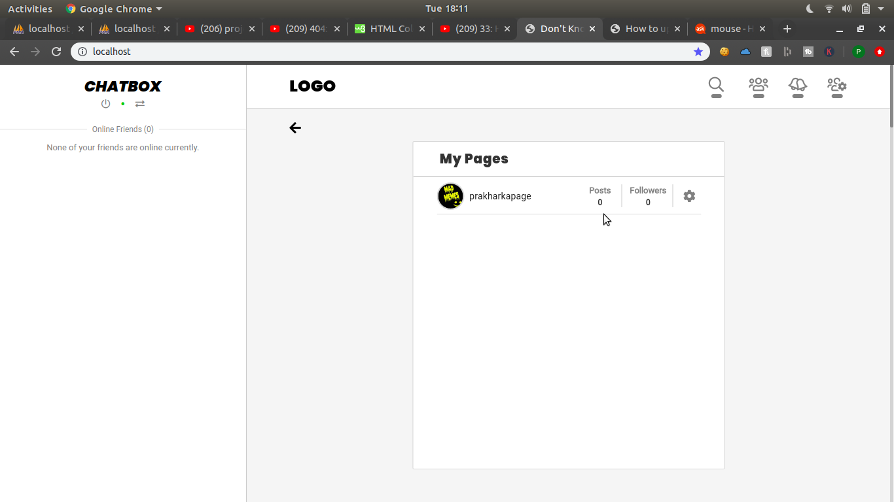

LOGO
How to upload a meme?
-
1. First Create a Page using your memelok account. If you want to
know how to create a page
Click Here.
If you have already created a Page, move to the 2nd point.
-
2. On the Home Page, click the icon which is first from the right,
which looks like this - (
).
-
3. Then Click on the option - ( My Pages ). An overlay will open
with list of Pages created by you.
- 4. Identify the page for which you want to upload your meme.
- 5. Click the area of POSTS COUNT.
-

-
6. Now click the big button on the left side to upload your meme
image.
- 7. Then Add a caption(it's optional).
-
8. Now if you want to add tags(helps your meme to reach out more
people), click the link on the right side which says - 'Click to add
tags'. Now, Select only those tags which are related to your meme.
-
Now Click the Upload Button on the top right Corner. Wait for 4-10
seconds. And you will have your meme uploaded.